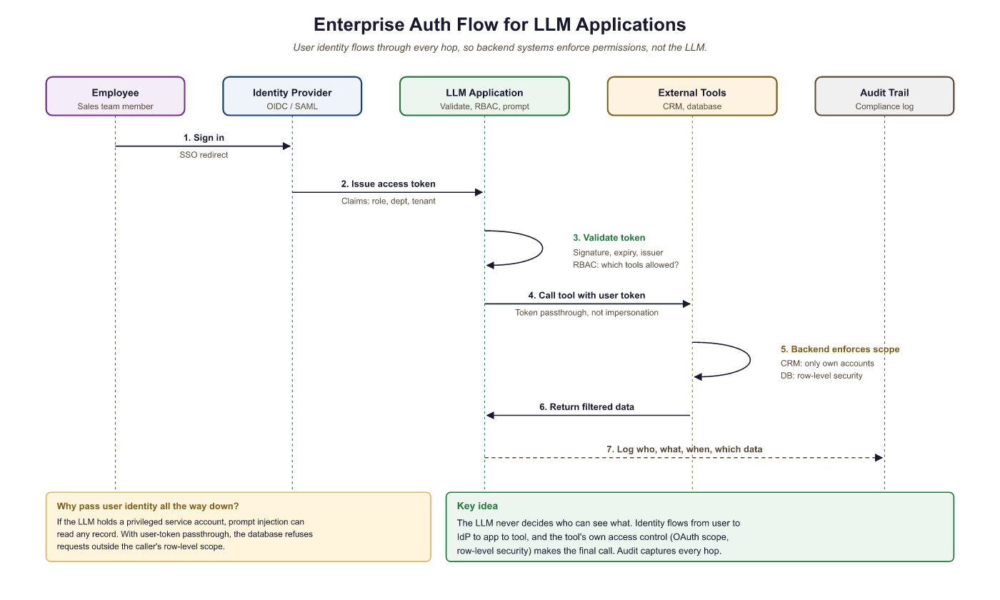

"Every enterprise integration looks simple on the whiteboard. Then you meet the identity provider."
A Visionary Compass, Enterprise-Weathered AI Agent
An LLM application that cannot plug into your enterprise identity, access control, and audit infrastructure will never make it past the security review. This section covers the integration patterns that connect LLM systems to the organizational fabric: identity providers for authentication, role-based access control for authorization, multi-tenant data isolation, compliance-grade audit logging, and human-in-the-loop approval workflows for high-stakes outputs. These patterns build on the deployment architecture from Section 28.1 and the governance frameworks from Section 29.5.
Prerequisites
This section builds on deployment architecture from Chapter 28, safety and compliance from Chapter 29, and vendor evaluation from Section 30.4. Familiarity with enterprise authentication protocols (OAuth 2.0, SAML) and cloud IAM is helpful but not required.
30.6.1 Identity Integration for LLM Applications
Enterprise LLM deployments cannot rely on simple API keys shared across teams. Every request to an LLM service must be attributable to a specific user, governed by that user's permissions, and auditable after the fact. This means integrating with your organization's existing identity provider (IdP) using protocols like OpenID Connect (OIDC), SAML 2.0, or OAuth 2.0. The LLM application acts as a relying party in the identity flow, validating tokens issued by the IdP and extracting user claims (role, department, tenant) that drive downstream authorization decisions.
A critical pattern is token passthrough: when the LLM invokes external tools or APIs on behalf of a user, it forwards the user's access token (or a scoped derivative) rather than using a shared service account. This preserves the principle of least privilege and ensures that tool calls respect the user's actual permissions. For example, if a sales agent uses an LLM-powered assistant to query the CRM, the CRM call should use the salesperson's OAuth token so that they only see accounts they own.

# Example: FastAPI middleware for OIDC token validation in an LLM service
from fastapi import FastAPI, Request, HTTPException, Depends
from fastapi.security import HTTPBearer, HTTPAuthorizationCredentials
import httpx
from jose import jwt, JWTError
from functools import lru_cache
app = FastAPI()
bearer_scheme = HTTPBearer()
OIDC_ISSUER = "https://login.enterprise.com/realms/prod"
OIDC_AUDIENCE = "llm-platform"
@lru_cache(maxsize=1)
def get_jwks():
"""Fetch and cache the OIDC provider's public keys."""
discovery = httpx.get(f"{OIDC_ISSUER}/.well-known/openid-configuration").json()
return httpx.get(discovery["jwks_uri"]).json()
async def validate_token(
credentials: HTTPAuthorizationCredentials = Depends(bearer_scheme),
) -> dict:
"""Validate the Bearer token and return user claims."""
try:
claims = jwt.decode(
credentials.credentials,
get_jwks(),
algorithms=["RS256"],
audience=OIDC_AUDIENCE,
issuer=OIDC_ISSUER,
)
return {
"user_id": claims["sub"],
"email": claims.get("email"),
"roles": claims.get("realm_access", {}).get("roles", []),
"tenant_id": claims.get("tenant_id"),
"access_token": credentials.credentials, # for passthrough
}
except JWTError as e:
raise HTTPException(status_code=401, detail=f"Invalid token: {e}")
@app.post("/chat")
async def chat(request: Request, user: dict = Depends(validate_token)):
"""Chat endpoint with identity-aware context."""
body = await request.json()
# User identity flows into the LLM context and tool calls
return await process_chat(
message=body["message"],
user_id=user["user_id"],
tenant_id=user["tenant_id"],
roles=user["roles"],
passthrough_token=user["access_token"],
)
The passthrough_token field is the key architectural decision. When the LLM orchestrator invokes a tool (a database query, a Slack message, a Jira update), it attaches this token to the outbound request. The downstream service validates the token independently, ensuring that the LLM cannot escalate privileges beyond what the user actually holds.
A Fortune 500 company's security team discovered that their LLM assistant, authenticated via a shared service account, could access every department's Confluence space. The assistant cheerfully answered questions about upcoming layoff plans when an intern asked "what changes are coming next quarter?" The fix took 20 minutes (switch to token passthrough); the incident response took three weeks.
30.6.2 Role-Based Access Control for LLM Features
RBAC in an LLM system extends beyond traditional "can this user access this endpoint" checks. Enterprises need to control access across four dimensions: which models a user can invoke (GPT-4o vs. a cheaper model), which tools they can use (read-only database access vs. write access), which prompts or assistants they can access (a legal review assistant restricted to the legal team), and which knowledge bases they can query (restricting HR documents to HR staff).
# Example: LLM-specific RBAC policy engine
from dataclasses import dataclass, field
from typing import Optional
@dataclass
class LLMPermission:
"""A single permission for an LLM resource."""
resource_type: str # "model", "tool", "assistant", "knowledge_base"
resource_id: str # "gpt-4o", "sql-query", "legal-reviewer", "hr-docs"
actions: list[str] # ["invoke"], ["read", "write"], ["query"]
@dataclass
class LLMRole:
"""An enterprise role with LLM-specific permissions."""
name: str
permissions: list[LLMPermission] = field(default_factory=list)
token_budget_daily: int = 100_000
max_context_window: int = 32_000
# Define roles
ROLES = {
"analyst": LLMRole(
name="analyst",
permissions=[
LLMPermission("model", "gpt-4o-mini", ["invoke"]),
LLMPermission("tool", "sql-read", ["invoke"]),
LLMPermission("knowledge_base", "product-docs", ["query"]),
],
token_budget_daily=200_000,
),
"engineer": LLMRole(
name="engineer",
permissions=[
LLMPermission("model", "gpt-4o", ["invoke"]),
LLMPermission("model", "claude-sonnet-4", ["invoke"]),
LLMPermission("tool", "sql-read", ["invoke"]),
LLMPermission("tool", "code-exec", ["invoke"]),
LLMPermission("knowledge_base", "product-docs", ["query"]),
LLMPermission("knowledge_base", "internal-wiki", ["query"]),
],
token_budget_daily=500_000,
),
"admin": LLMRole(
name="admin",
permissions=[
LLMPermission("model", "*", ["invoke"]),
LLMPermission("tool", "*", ["invoke"]),
LLMPermission("knowledge_base", "*", ["query"]),
LLMPermission("assistant", "*", ["invoke", "configure"]),
],
token_budget_daily=2_000_000,
),
}
def check_permission(
user_roles: list[str],
resource_type: str,
resource_id: str,
action: str,
) -> bool:
"""Check if any of the user's roles grant the requested permission."""
for role_name in user_roles:
role = ROLES.get(role_name)
if role is None:
continue
for perm in role.permissions:
if perm.resource_type != resource_type:
continue
if perm.resource_id != "*" and perm.resource_id != resource_id:
continue
if action in perm.actions:
return True
return FalseIn practice, RBAC policies for LLM systems are often stored in a policy engine like Open Policy Agent (OPA) or Cedar (AWS), with the LLM orchestrator querying the engine before each model invocation or tool call. This decouples policy from application code and allows security teams to update policies without redeploying the application.
LLM RBAC is four-dimensional. Traditional RBAC controls endpoint access. LLM RBAC must simultaneously gate model selection, tool availability, knowledge base access, and token budgets. A well-designed policy engine evaluates all four dimensions on every request, ensuring that a user with "analyst" privileges cannot invoke expensive models, execute code, or access restricted knowledge, even if the LLM's reasoning suggests doing so.
30.6.3 Multi-Tenant Architecture and Data Partitioning
SaaS platforms that offer LLM features must ensure strict isolation between tenants. A prompt from Tenant A must never retrieve documents belonging to Tenant B. Conversation history from one tenant must never leak into another's context window. This requires partitioning at multiple layers: the vector store, the conversation memory, the prompt template registry, and the audit log.
The most robust approach uses namespace-based isolation in the vector store combined with tenant-scoped filters on every query. Each tenant's documents are indexed under a dedicated namespace or collection, and the retrieval layer enforces tenant boundaries before the LLM ever sees the results.
# Example: Tenant-isolated RAG pipeline with namespace separation
from qdrant_client import QdrantClient
from qdrant_client.models import Filter, FieldCondition, MatchValue
class TenantIsolatedRAG:
"""RAG pipeline with strict tenant data isolation."""
def __init__(self, qdrant_url: str):
self.client = QdrantClient(url=qdrant_url)
def retrieve(
self,
tenant_id: str,
query_embedding: list[float],
top_k: int = 5,
) -> list[dict]:
"""Retrieve documents scoped to a single tenant."""
results = self.client.search(
collection_name="documents",
query_vector=query_embedding,
query_filter=Filter(
must=[
FieldCondition(
key="tenant_id",
match=MatchValue(value=tenant_id),
)
]
),
limit=top_k,
)
return [
{
"text": hit.payload["text"],
"source": hit.payload["source"],
"score": hit.score,
}
for hit in results
]
def build_context(
self,
tenant_id: str,
query: str,
query_embedding: list[float],
system_prompt_override: str | None = None,
) -> list[dict]:
"""Build a tenant-scoped context for the LLM."""
docs = self.retrieve(tenant_id, query_embedding)
# Use tenant-specific system prompt if configured
system_prompt = (
system_prompt_override
or self.get_tenant_system_prompt(tenant_id)
)
context_block = "\n\n".join(
f"[Source: {d['source']}]\n{d['text']}" for d in docs
)
return [
{"role": "system", "content": system_prompt},
{"role": "user", "content": f"Context:\n{context_block}\n\nQuestion: {query}"},
]
def get_tenant_system_prompt(self, tenant_id: str) -> str:
"""Retrieve the tenant-specific system prompt from configuration."""
# In production, this reads from a database or config service
return f"You are an assistant for tenant {tenant_id}. Only use provided context."
Beyond vector store isolation, conversation memory requires its own partitioning. If you use Redis or a database for session state, every key must include the tenant identifier. Prompt templates should be stored in a tenant-scoped registry so that Tenant A's custom instructions never appear in Tenant B's sessions. For the strongest isolation guarantees, some enterprises deploy separate vector store collections (or even separate instances) per tenant, accepting the operational overhead in exchange for a hard boundary that a software bug cannot breach.
30.6.3.1 Isolation Models Compared
Multi-tenant LLM platforms can implement isolation at different granularities, each with distinct cost, security, and operational trade-offs. The table below maps each isolation layer to the mechanism that enforces it and the failure mode if that mechanism is bypassed.
| Isolation Layer | Mechanism | Strength | Failure Mode |
|---|---|---|---|
| Namespace in shared vector DB | Metadata filter on tenant_id |
Medium (software boundary) | Missing filter returns cross-tenant docs |
| Collection-per-tenant | Separate Qdrant/Pinecone collection per tenant | High (logical separation) | Misconfigured collection name leaks data |
| Database-per-tenant | Dedicated DB instance per tenant | Very high (infrastructure boundary) | Connection string misconfiguration |
| Request-level API key scoping | Tenant-scoped API keys with gateway enforcement | High | Shared key across tenants breaks attribution |
| Cache isolation | Tenant-prefixed cache keys; separate Redis DBs | Medium to High | Cache poisoning: Tenant A's cached response served to Tenant B |
| Log and telemetry separation | Tenant tag on every log entry; filtered dashboards | Medium | Missing tag exposes prompts/responses in shared logs |
30.6.3.2 Cache Isolation and Cross-Tenant Poisoning
Semantic caching (described in Section 28.1) introduces a subtle multi-tenant risk: if two tenants ask similar questions, a shared cache might return Tenant A's cached answer to Tenant B. The answer may reference Tenant A's proprietary data. The defense is straightforward: always include the tenant_id as part of the cache key, so that cache lookups are scoped to a single tenant. For Redis-backed caches, use tenant-prefixed keys (cache:{tenant_id}:{query_hash}) or assign each tenant a separate Redis logical database.
30.6.3.3 OWASP LLM Top 10 Multi-Tenant Risks
Several items in the OWASP Top 10 for LLM Applications (2025) map directly to multi-tenant concerns. LLM01: Prompt Injection can be weaponized to extract another tenant's data if the context window contains cross-tenant information. LLM06: Excessive Agency becomes more dangerous when an LLM agent operating under Tenant A's session can invoke tools or access resources belonging to Tenant B. LLM08: Excessive Autonomy risks compounding when automated workflows span tenants. Defense in depth requires enforcing tenant boundaries at every layer: retrieval, tool invocation, caching, and logging.
Who: A platform architect at a B2B SaaS company that lets enterprise customers upload proprietary documents and query them via an LLM
Situation: The product served 200+ enterprise tenants, each uploading confidential contracts, financial reports, and internal policies. All tenants shared the same infrastructure to keep operational costs manageable.
Problem: During a security review, an engineer discovered that a malformed API request could return document snippets from the wrong tenant's vector collection. The bug was never exploited in production, but it revealed that the existing tenant isolation was implemented in only one layer (the application code) with no defense in depth.
Decision: The team implemented six-layer isolation: (1) each tenant gets a dedicated Qdrant collection named docs_{tenant_id}, (2) the API gateway validates tenant-scoped API keys and injects tenant_id into every downstream call, (3) the RAG retrieval layer only queries the tenant's collection with no "search all collections" path in the code, (4) Redis cache keys are prefixed with {tenant_id}:, (5) all log entries include a structured tenant_id field, and (6) quarterly isolation audits run automated tests that attempt cross-tenant retrieval and verify zero results.
Result: The quarterly audit caught two additional isolation gaps in the caching layer during the first cycle. After remediation, all subsequent audits returned zero cross-tenant results across 50,000 automated test queries.
Lesson: Multi-tenant LLM systems must enforce tenant boundaries at every layer (retrieval, caching, logging, tool invocation) because a single-layer isolation approach will eventually fail.
30.6.4 Audit Logging for Compliance
Every LLM interaction in an enterprise must produce an immutable audit record. Regulators, internal compliance teams, and incident responders all need the ability to reconstruct exactly what happened: who asked what, which model responded, what tools were invoked, what data was accessed, and what the final output was. This is not optional for organizations subject to SOC 2, HIPAA, GDPR, or financial regulations.
The audit log should capture the full lifecycle of a request: the inbound prompt (with PII redacted if required by policy), the model and parameters used, any tool calls and their results, the final response, and metadata such as token counts, latency, and cost. Logs must be written to an append-only store (such as Amazon S3 with Object Lock, or an immutable database table) so that records cannot be tampered with after the fact.
# Example: Structured audit logging for LLM interactions
import json
import hashlib
from datetime import datetime, timezone
from dataclasses import dataclass, asdict
from typing import Optional
@dataclass
class LLMAuditRecord:
"""Immutable audit record for a single LLM interaction."""
# Identity
request_id: str
user_id: str
tenant_id: str
session_id: str
# Request
timestamp: str
model: str
prompt_hash: str # SHA-256 of the full prompt (for privacy)
prompt_text: Optional[str] # included only if policy allows
tool_calls: list[dict]
# Response
response_hash: str
response_text: Optional[str]
# Metrics
input_tokens: int
output_tokens: int
latency_ms: int
estimated_cost_usd: float
# Integrity
record_hash: str = ""
def compute_hash(self) -> str:
"""Compute a SHA-256 hash of the record for tamper detection."""
data = asdict(self)
data.pop("record_hash")
canonical = json.dumps(data, sort_keys=True)
return hashlib.sha256(canonical.encode()).hexdigest()
class AuditLogger:
"""Writes LLM audit records to an append-only store."""
def __init__(self, storage_backend):
self.storage = storage_backend
def log(self, record: LLMAuditRecord):
record.record_hash = record.compute_hash()
self.storage.append(asdict(record))
def verify(self, record_dict: dict) -> bool:
"""Verify that a stored record has not been tampered with."""
stored_hash = record_dict.pop("record_hash")
canonical = json.dumps(record_dict, sort_keys=True)
computed = hashlib.sha256(canonical.encode()).hexdigest()
return computed == stored_hash
Audit logs that contain full prompt text may themselves become a compliance liability. If users paste sensitive data (PII, PHI, financial records) into prompts, the audit log now contains that data and must be protected accordingly. Many enterprises adopt a hash-and-redact strategy: store a SHA-256 hash of the full prompt for integrity verification, but redact or omit sensitive content from the stored text. Retention policies must align with your regulatory requirements, which may range from 90 days (SOC 2) to seven years (financial regulations).
30.6.5 Approval Workflows and Human-in-the-Loop Escalation
Not every LLM action should execute immediately. High-risk operations (sending an email to a customer, modifying a database record, approving an expense, generating a legal document) require human approval before execution. The approval workflow pattern intercepts the LLM's tool call, presents it to a human reviewer, and only executes the action after explicit approval.
The architecture separates intent from execution. The LLM generates a structured intent (a tool call with parameters), the system classifies the intent by risk level, and high-risk intents are routed to an approval queue. The approver sees the full context: the user's original request, the LLM's reasoning, and the proposed action with its parameters. They can approve, reject, or modify the action before it executes.
# Example: Risk-based approval routing for LLM tool calls
from enum import Enum
from dataclasses import dataclass
class RiskLevel(Enum):
LOW = "low" # auto-execute
MEDIUM = "medium" # log and execute, flag for review
HIGH = "high" # require human approval before execution
CRITICAL = "critical" # require two approvals
# Risk classification for tool calls
TOOL_RISK_MAP = {
"search_documents": RiskLevel.LOW,
"summarize_text": RiskLevel.LOW,
"send_email": RiskLevel.HIGH,
"update_database": RiskLevel.HIGH,
"delete_record": RiskLevel.CRITICAL,
"approve_expense": RiskLevel.CRITICAL,
"generate_contract": RiskLevel.HIGH,
"query_database_readonly": RiskLevel.MEDIUM,
}
@dataclass
class PendingApproval:
request_id: str
user_id: str
tool_name: str
tool_params: dict
risk_level: RiskLevel
llm_reasoning: str
original_query: str
status: str = "pending" # pending, approved, rejected, modified
class ApprovalRouter:
"""Routes tool calls based on risk classification."""
def __init__(self, approval_queue, executor):
self.queue = approval_queue
self.executor = executor
async def route(self, tool_call: dict, context: dict) -> dict:
tool_name = tool_call["name"]
risk = TOOL_RISK_MAP.get(tool_name, RiskLevel.HIGH)
if risk == RiskLevel.LOW:
return await self.executor.execute(tool_call)
if risk == RiskLevel.MEDIUM:
result = await self.executor.execute(tool_call)
await self.queue.log_for_review(tool_call, context, result)
return result
# HIGH and CRITICAL: require approval before execution
approval = PendingApproval(
request_id=context["request_id"],
user_id=context["user_id"],
tool_name=tool_name,
tool_params=tool_call["arguments"],
risk_level=risk,
llm_reasoning=context.get("reasoning", ""),
original_query=context["original_query"],
)
await self.queue.submit(approval)
return {
"status": "pending_approval",
"message": f"Action '{tool_name}' requires approval. Request submitted.",
"approval_id": approval.request_id,
}For critical actions that require two approvals, the workflow extends to a multi-step process: the first approver validates the business logic, the second approver (often from a different team, such as security or compliance) validates the risk assessment. This dual-approval pattern is common in financial services and healthcare, where a single point of failure in the approval chain is unacceptable.
30.6.6 Governance Boundaries
Enterprise governance for LLM systems spans three domains: data residency, model provenance, and prompt review processes.
Data residency requirements dictate where data can be processed. A European enterprise subject to GDPR may require that all LLM inference happens within the EU. This constrains model selection (not all providers offer EU-based inference endpoints) and architecture (you may need region-specific deployments with traffic routing based on the user's jurisdiction). Cloud providers now offer "sovereign AI" configurations, but verifying compliance requires careful audit of the full data flow, including any telemetry or logging that the provider collects.
Model provenance tracks which model version produced which outputs. When a model is updated (a new checkpoint, a fine-tuned variant, or a provider-side update), the provenance record links outputs to the specific model version that generated them. This is essential for debugging regressions, responding to regulatory inquiries, and maintaining reproducibility.
Prompt review processes ensure that system prompts and prompt templates undergo the same change management discipline as application code. A prompt change can alter the behavior of the entire system; it deserves a pull request, a review, and a staged rollout. Many enterprises store prompts in version-controlled repositories and deploy them through CI/CD pipelines, treating prompt changes as configuration updates that require approval.
# Example: Governance configuration for an enterprise LLM platform
governance:
data_residency:
default_region: "eu-west-1"
allowed_regions: ["eu-west-1", "eu-central-1"]
blocked_regions: ["us-*", "ap-*"]
enforcement: "strict" # reject requests that would route outside allowed regions
model_provenance:
require_version_pinning: true
allowed_providers: ["azure-openai", "anthropic-eu", "self-hosted"]
model_registry_url: "https://models.internal.enterprise.com/registry"
audit_every_invocation: true
prompt_management:
repository: "git@github.com:enterprise/llm-prompts.git"
require_review: true
min_reviewers: 2
deploy_strategy: "canary" # canary, blue-green, or immediate
canary_percentage: 10
rollback_on_quality_drop: true
quality_threshold:
min_relevance_score: 0.85
max_hallucination_rate: 0.02
secrets:
vault_backend: "hashicorp-vault"
vault_url: "https://vault.internal.enterprise.com"
api_key_rotation_days: 30
tool_credential_path: "secret/llm-platform/tools/"
audit_secret_access: true30.6.7 Secrets Management and Credential Rotation
LLM applications accumulate API keys at a remarkable rate: keys for the model provider, keys for vector databases, keys for tool APIs (Slack, Jira, databases, email services), and keys for observability platforms. Hardcoding these in environment variables or configuration files is a security incident waiting to happen. Enterprise deployments must integrate with a secrets vault (HashiCorp Vault, AWS Secrets Manager, Azure Key Vault, or GCP Secret Manager) and implement automatic rotation.
The LLM orchestrator fetches credentials from the vault at runtime, caches them with a short TTL, and gracefully handles rotation events. When a credential is rotated, the next request fetches the new value from the vault. For tool calls, the orchestrator retrieves tool-specific credentials from the vault just before invocation, ensuring that long-lived secrets never reside in memory longer than necessary.
# Example: Vault-integrated credential manager for LLM tool calls
import time
from typing import Optional
class VaultCredentialManager:
"""Manages API credentials with vault integration and caching."""
def __init__(self, vault_client, cache_ttl_seconds: int = 300):
self.vault = vault_client
self.cache_ttl = cache_ttl_seconds
self._cache: dict[str, tuple[str, float]] = {}
def get_credential(self, path: str) -> str:
"""Fetch a credential, using cache if fresh."""
cached = self._cache.get(path)
if cached:
value, fetched_at = cached
if time.time() - fetched_at < self.cache_ttl:
return value
# Fetch from vault
secret = self.vault.secrets.kv.v2.read_secret_version(path=path)
value = secret["data"]["data"]["api_key"]
self._cache[path] = (value, time.time())
return value
def get_tool_headers(self, tool_name: str) -> dict:
"""Build authentication headers for a specific tool."""
credential_path = f"llm-platform/tools/{tool_name}"
api_key = self.get_credential(credential_path)
return {"Authorization": f"Bearer {api_key}"}
def rotate_and_verify(self, path: str) -> bool:
"""Force rotation and verify the new credential works."""
# Invalidate cache
self._cache.pop(path, None)
# Fetch new credential (vault handles the actual rotation)
new_key = self.get_credential(path)
return new_key is not None
30.6.7.1 The Complete Key Lifecycle
Secrets management extends far beyond storing keys in a vault. A production secrets program must cover five distinct phases: generation (creating cryptographically strong credentials), distribution (securely delivering them to authorized consumers), rotation (replacing credentials on a schedule or after suspected compromise), revocation (immediately disabling a credential when a breach is detected), and destruction (permanently removing expired material from all stores, including backups). Skipping any phase creates gaps that attackers can exploit.
# Complete key lifecycle manager using HashiCorp Vault
import hvac
import secrets
import logging
from datetime import datetime, timezone
logger = logging.getLogger(__name__)
class KeyLifecycleManager:
"""Manages the full lifecycle of API keys via HashiCorp Vault."""
def __init__(self, vault_url: str, vault_token: str, mount: str = "secret"):
self.client = hvac.Client(url=vault_url, token=vault_token)
self.mount = mount
def generate(self, path: str, key_length: int = 64) -> str:
"""Phase 1: Generate a cryptographically strong key and store it."""
new_key = secrets.token_urlsafe(key_length)
self.client.secrets.kv.v2.create_or_update_secret(
path=path,
secret=dict(
api_key=new_key,
created_at=datetime.now(timezone.utc).isoformat(),
status="active",
),
mount_point=self.mount,
)
logger.info("Generated new key at path=%s", path)
return new_key
def rotate(self, path: str) -> str:
"""Phase 3: Rotate by generating a new key, keeping the old version."""
old = self.client.secrets.kv.v2.read_secret_version(
path=path, mount_point=self.mount,
)
old_version = old["data"]["metadata"]["version"]
new_key = self.generate(path)
logger.info(
"Rotated key at path=%s (old version=%d)", path, old_version
)
return new_key
def revoke(self, path: str) -> None:
"""Phase 4: Mark the current key as revoked."""
self.client.secrets.kv.v2.create_or_update_secret(
path=path,
secret=dict(
api_key="REVOKED",
revoked_at=datetime.now(timezone.utc).isoformat(),
status="revoked",
),
mount_point=self.mount,
)
logger.warning("Revoked key at path=%s", path)
def destroy(self, path: str, versions: list[int]) -> None:
"""Phase 5: Permanently destroy specific key versions."""
self.client.secrets.kv.v2.destroy_secret_versions(
path=path, versions=versions, mount_point=self.mount,
)
logger.warning(
"Destroyed versions=%s at path=%s", versions, path
)
30.6.7.2 Cloud KMS Comparison
When choosing a managed secrets backend, the three major cloud providers and HashiCorp Vault each offer distinct trade-offs. The table below summarizes the key differences for LLM platform teams.
| Feature | HashiCorp Vault | AWS KMS / Secrets Manager | Azure Key Vault | GCP Secret Manager |
|---|---|---|---|---|
| Hosting model | Self-managed or HCP Cloud | Fully managed | Fully managed | Fully managed |
| Auto-rotation | Via dynamic secrets engine | Native (Lambda-based) | Native (Event Grid) | Pub/Sub trigger + Cloud Function |
| Audit logging | Built-in audit device | CloudTrail | Azure Monitor + Diagnostic Logs | Cloud Audit Logs |
| Dynamic secrets | Yes (DB, AWS, Azure, GCP) | Limited (RDS only) | No | No |
| Multi-cloud support | Native | AWS only | Azure only | GCP only |
| Best for LLM platforms | Multi-cloud, tool-heavy agents | AWS-native deployments | Azure OpenAI Service users | Vertex AI / GCP-native stacks |
30.6.7.3 Secrets Scanning in CI/CD
Preventing secrets from entering version control is as important as managing them in production.
Three popular scanning tools integrate into CI/CD pipelines: detect-secrets (Yelp),
which uses an entropy-based heuristic plus plugin detectors for provider-specific key formats;
TruffleHog, which scans git history for high-entropy strings and known credential
patterns; and git-secrets (AWS Labs), which installs as a git pre-commit hook to
block commits containing AWS-style keys. For LLM projects, configure these tools to also flag
model provider API keys (OpenAI sk- prefixes, Anthropic sk-ant- prefixes,
and Cohere/HuggingFace tokens).
30.6.7.4 Encryption at Rest for Model Artifacts
Model weights and embedding indices represent significant intellectual property and may contain memorized training data. Encrypt these artifacts at rest using AES-256 (via cloud KMS envelope encryption or filesystem-level encryption such as LUKS on Linux). Vector database files should receive the same protection, especially when they contain tenant-specific embeddings that could be reverse-engineered to recover source text.
Common secrets anti-patterns in LLM projects. (1) Hardcoding API keys in notebooks or prompt templates that get committed to git. (2) Storing .env files in repositories, even "private" ones; assume every repo will eventually be cloned somewhere insecure. (3) Sharing a single API key across an entire team, making it impossible to attribute usage or rotate without disrupting everyone. (4) Using model provider API keys as the only authentication layer, with no gateway or proxy to enforce rate limits and access policies. (5) Leaving default Vault root tokens active in production. Each of these has caused real production incidents at organizations deploying LLM systems.
30.6.8 Practical Example: Enterprise Chatbot with Full Integration
The following example ties together all the patterns from this section into a single enterprise chatbot deployment. The chatbot authenticates users via SSO, enforces RBAC on model and tool access, isolates tenant data, logs every interaction for compliance, routes high-risk actions through approval workflows, and manages credentials through a vault.
# Example: Enterprise chatbot orchestrator combining all integration patterns
class EnterpriseChatOrchestrator:
"""
Production chatbot with SSO, RBAC, tenant isolation,
audit logging, approval workflows, and vault integration.
"""
def __init__(
self,
rag: TenantIsolatedRAG,
audit: AuditLogger,
approval: ApprovalRouter,
credentials: VaultCredentialManager,
):
self.rag = rag
self.audit = audit
self.approval = approval
self.credentials = credentials
async def handle_request(self, user: dict, message: str) -> dict:
"""Process a chat request through the full enterprise pipeline."""
request_id = generate_request_id()
# 1. RBAC check: can this user invoke the requested model?
model = self.select_model(user["roles"])
if not check_permission(user["roles"], "model", model, "invoke"):
return {"error": "Insufficient permissions for model access."}
# 2. Tenant-isolated retrieval
embedding = await self.embed(message)
context_messages = self.rag.build_context(
tenant_id=user["tenant_id"],
query=message,
query_embedding=embedding,
)
# 3. LLM invocation with tool routing
api_key = self.credentials.get_credential(f"models/{model}")
response = await self.call_llm(model, context_messages, api_key)
# 4. Process tool calls through approval workflow
if response.get("tool_calls"):
for tool_call in response["tool_calls"]:
if not check_permission(
user["roles"], "tool", tool_call["name"], "invoke"
):
continue # skip unauthorized tools
result = await self.approval.route(
tool_call,
context={
"request_id": request_id,
"user_id": user["user_id"],
"original_query": message,
},
)
# Feed tool result back to LLM for final response
# 5. Audit logging
self.audit.log(LLMAuditRecord(
request_id=request_id,
user_id=user["user_id"],
tenant_id=user["tenant_id"],
session_id=user.get("session_id", ""),
timestamp=datetime.now(timezone.utc).isoformat(),
model=model,
prompt_hash=hashlib.sha256(message.encode()).hexdigest(),
prompt_text=None, # redacted per policy
tool_calls=response.get("tool_calls", []),
response_hash=hashlib.sha256(
response["content"].encode()
).hexdigest(),
response_text=response["content"],
input_tokens=response["usage"]["input"],
output_tokens=response["usage"]["output"],
latency_ms=response["latency_ms"],
estimated_cost_usd=response["estimated_cost"],
))
return {"response": response["content"], "request_id": request_id}
def select_model(self, roles: list[str]) -> str:
"""Select the best available model based on user roles."""
if "admin" in roles or "engineer" in roles:
return "gpt-4o"
return "gpt-4o-mini"
Who: A solutions architect at a Fortune 500 insurance company deploying an internal LLM-powered claims assistant
Situation: The company needed to integrate the claims assistant with existing enterprise infrastructure: Active Directory for identity, strict RBAC for data access, immutable audit logs for regulatory compliance, and human approval workflows for high-value claim decisions.
Problem: The initial proof-of-concept used hardcoded API keys, no tenant isolation, and console logging. The security team rejected it for production deployment, citing 14 compliance gaps across identity, authorization, audit, and secrets management.
Decision: They built a six-layer architecture: (1) Identity: Keycloak issuing OIDC tokens, validated by the FastAPI gateway. (2) Authorization: Open Policy Agent evaluating RBAC policies stored in Git and deployed via CI/CD. (3) Data: Qdrant vector store with tenant-scoped collections and Redis session state with tenant-prefixed keys. (4) Audit: structured JSON logs written to Amazon S3 with Object Lock (WORM compliance), with a secondary copy streaming to Elasticsearch. (5) Approval: high-risk tool calls routed to a Slack channel for human approval, with status tracked in PostgreSQL. (6) Secrets: HashiCorp Vault managing all API keys with 30-day automatic rotation.
Result: The security team approved the production deployment after a two-week review. The system passed a SOC 2 Type II audit eight months later with no findings related to the LLM integration layer.
Lesson: Enterprise LLM deployments require the same security infrastructure (identity, authorization, audit, secrets management) as any other production service; skipping these layers in a proof-of-concept creates a false impression of deployment readiness.
- Enterprise LLM integration requires connecting to existing identity providers (SSO, SAML, OIDC) so that LLM features inherit the organization's access control model.
- Role-based access control for LLM features should govern which users can access which models, tools, and data sources, with audit logging for every interaction.
- Multi-tenant architecture must partition data, prompts, and model state across tenants with strict isolation to prevent cross-tenant data leakage.
- Audit logging for compliance captures the full request-response chain (prompt, model, parameters, output, user identity, timestamp) for regulatory and forensic review.
- Approval workflows and human-in-the-loop escalation ensure that high-stakes LLM outputs (contract generation, medical advice, financial decisions) receive human review before action.
Exercises
Design an RBAC policy for an enterprise LLM platform with three roles: analyst, engineer, and admin. Specify which models, tools, and knowledge bases each role can access. Include token budget limits per role.
Answer Sketch
Analysts: GPT-4o-mini only, read-only SQL tool, product documentation knowledge base, 200K tokens/day. Engineers: GPT-4o and Claude Sonnet, read-only SQL plus code execution tool, all technical knowledge bases, 500K tokens/day. Admins: all models, all tools, all knowledge bases including HR and finance, 2M tokens/day, plus ability to configure assistants and manage prompts.
Write a test suite that verifies tenant isolation in a multi-tenant RAG pipeline. The tests should confirm that Tenant A cannot retrieve Tenant B's documents, even when queries are semantically similar to Tenant B's content.
Answer Sketch
Create two tenants with overlapping vocabulary but distinct documents. Index "Q3 revenue report" under both tenants with different content. Query as Tenant A and verify that only Tenant A's document appears. Attempt to bypass isolation by including Tenant B's ID in the query text, and verify the filter still holds. Test edge cases: empty tenant, nonexistent tenant, and null tenant ID (should return zero results, not all results).
Implement a simple approval workflow for an LLM agent that can send emails. The workflow should intercept the "send_email" tool call, present it to an approver via a REST API, and only send the email after approval.
Answer Sketch
Create a FastAPI endpoint that receives pending approvals and stores them in a database. Build a second endpoint where approvers can list pending actions and approve or reject them. The LLM orchestrator polls for approval status (or uses a webhook) and executes the email send only after receiving an "approved" status. Include a timeout: if no approval is received within 4 hours, the action is auto-rejected and the user is notified.
LLM-native authorization is an emerging area where policy engines understand natural language intents, not just structured permissions. Instead of mapping every tool call to a predefined role, the system evaluates whether a user's request falls within their authority by reasoning over organizational policies expressed in natural language.
Early prototypes combine Cedar-style policy engines with LLM classifiers to bridge the gap between rigid RBAC and flexible conversational interfaces.
What Comes Next
The next section, Section 30.7: Economic Design of LLM Systems, covers the cost engineering side of enterprise LLM deployments: token budgeting, cascade routing, semantic caching, and ROI measurement at the per-request level.
Hardt, D. (2012). "The OAuth 2.0 Authorization Framework." RFC 6749, IETF.
The authoritative specification for OAuth 2.0, the authorization framework underlying most API authentication in LLM applications. Essential reference for implementing secure API key management and user delegation patterns.
Sakimura, N., Bradley, J., Jones, M., et al. (2014). "OpenID Connect Core 1.0." OpenID Foundation.
The OpenID Connect specification that builds identity verification on top of OAuth 2.0. Directly relevant to implementing user authentication in multi-tenant LLM applications.
OWASP. (2025). "OWASP Top 10 for LLM Applications." Open Worldwide Application Security Project.
Security-focused catalog of LLM-specific vulnerabilities, from prompt injection to insecure output handling. The starting checklist for any security review of an LLM-powered application.
Cedar Policy Language. (2024). "Authorization Policy Language." AWS. cedarpolicy.com.
AWS's open-source authorization policy language designed for fine-grained access control. Relevant to implementing the principle of least privilege for tool-using agents discussed in this section.
HashiCorp. (2025). "Vault Secrets Management." HashiCorp Documentation. vaultproject.io.
Documentation for Vault, a widely used secrets management platform. Practical reference for securing API keys, model credentials, and other secrets in LLM deployment pipelines.
Microsoft. (2025). "Azure AI Content Safety." Microsoft Learn.
Azure's content safety service for detecting harmful content in AI-generated text and images. A practical option for implementing the output filtering guardrails discussed in this section.
Anthropic. (2025). "Enterprise Security and Compliance." Anthropic Documentation.
Anthropic's enterprise security documentation covering data handling, compliance certifications, and security architecture. Useful reference for understanding provider-side security guarantees when using managed LLM APIs.